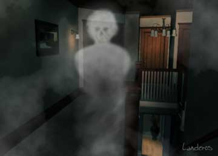

|
 
- - - - - - - - - -
Apartment 45
A true account, as told to me by Chauncey Romero.
- - - - - - - - - -
By Rob Landeros
 DON'T BELIEVE IN GHOSTS. "Life after death". The phrase itself is laughable on its face. It is the epitome of oxymorons and perhaps the most brazen and outrageous idea ever to be sold to the desperate masses. DON'T BELIEVE IN GHOSTS. "Life after death". The phrase itself is laughable on its face. It is the epitome of oxymorons and perhaps the most brazen and outrageous idea ever to be sold to the desperate masses.
I make that point before presenting this story so that you will know that my intent is not to promote superstitious folly or to merely shock by spinning cheap campfire horror yarns, but rather to simply recount a tale that is, to the best of my personal knowledge and judgement, factual.
The following is put forth, with some dramatic interpretation, as it was related to me by my cousin and friend Chauncey Romero of Jacksonville Oregon. All parties involved have verified the essential accuracy of this account.
Chauncey and I are part of a large family consisting mostly of first through third generation Mexican Americans. There is a long history of old-world superstitions and native beliefs that provide a rich background to the many contemporary tales the family tells - tales of the incredible and the inexplicable. The bounteous legacy of personal brushes with the supernatural, taken in its entirety, has become the stuff of family legend. Several of them are exceptionally haunting and fascinating and worthy to have come from the mind of the most highly imaginative writers of horror.
This particular narrative stands out distinctly from the rest in that, in my estimation, its veracity is stronger than most. The credibility of the people involved is about as solid as one could ask for, but that can be said of any number of similar accounts of the inexplicable. In this case, the validity of the story is bolstered by verifiable circumstances and coincidental, corroborating evidence that flies in the face of all reasonable probabilities.
 E WERE AT A FAMILY GATHERING sometime in 1971. My wife Dena and I were engaged in a conversation with Dianne, my cousin and your sister, where the conversation had turned, as it had many times before, to the telling and retelling of good old-fashioned family ghost stories. They say that every family has at least one gay uncle. We don't have any that I'm aware of, but what we lack in that area, we more than make up for in true horror stories. That night, I had a relatively new and recent personal experience to tell. E WERE AT A FAMILY GATHERING sometime in 1971. My wife Dena and I were engaged in a conversation with Dianne, my cousin and your sister, where the conversation had turned, as it had many times before, to the telling and retelling of good old-fashioned family ghost stories. They say that every family has at least one gay uncle. We don't have any that I'm aware of, but what we lack in that area, we more than make up for in true horror stories. That night, I had a relatively new and recent personal experience to tell.
"I don't believe in ghosts." I told Dianne. "But I'll tell you something that happened to me about two years ago that was pretty strange."
"Oh yeah," added Dena, "That thing that happened in your apartment? Oh man. I wasn't there, but Chauncey told me all about it the next day and it really freaked me out. I do believe in ghosts but even if I didn't I'd have been freaked anyway."
"Anyway, I had come home that evening and was pretty tired. I had a long day working at the store (the House of Note, a music store in Riverside California). I think I'd been partying pretty hardy the night before, so I was probably a little hung over too. It must have been about 8 o'clock when I just spread out on the bed and crashed.
"The next thing I know, it feels like several hours later in the dead of night when I'm awakened by the sound of somebody coming through the door to the apartment. This wasn't unusual since I was sharing the place on a part time basis with Alex Caruso. He was always in and out. If he wasn't sleeping there, he'd sleep over at his mother's house. You remember Alex?"
Dianne nodded. "I think so. Isn't he that short, disheveled looking guy that sort of hangs around the band?"
At the time, besides running the store during the day, I was playing with the house band at The Banker's Club on the weekends.
"Yeah, I guess you could describe him that way. He's actually a funny guy. He always had the hots for you too. Didn't he Deen?"
"Yep."
Dena and I laughed at the quick blush we got out of my dear, modest cousin. I loved to tease her. But this was too easy and I didn't want to get sidetracked from my story. I was just starting to get scared myself - just like I do every time I recall it.
"But I distinctly heard the front door open and close. A normal sound of somebody coming in. Being in a rock band and having a hang-loose lifestyle, there were always people around. Nothing unusual about it at all.
"The apartment had a curved staircase with a wrought iron handrail that went up to an open second floor hallway that ran along the bedrooms and overlooked the entire downstairs. I was in the master bedroom at the end of the hallway.
"So I called out 'Alex?'... 'ALEX?' I wasn't alarmed or anything, I just wanted to know if it was him. It seems like I wanted to talk to him about something, but now I don't remember what it was. But I heard him, or what I thought was him, coming up the stairs. I didn't think about it or wasn't aware of it at the time, but I don't think I actually heard footsteps like you normally would. It was the sound of the wrought iron handrail that I was focused on and that stands out in my mind today. It had always made a low-pitched tone as it vibrated, like a very large tuning fork. But this time the humming was definitely louder and more pronounced. It sounded as if the rail were moaning. I called out again even louder and firmer, 'ALEX! IS THAT YOU?" The moaning of the rail had stopped so I figured that whoever it was had reached the top of the stairs and was coming down the hallway and should have been well within earshot by now. So my feeling at that point was one of annoyance, you know, at not being answered, and at the same time a growing dread at not being answered.
"I was about to curse or call out again when the figure drifted into the room.
 Next page | "So go on.", urged Dianne. "There was a figure in the room?" Next page | "So go on.", urged Dianne. "There was a figure in the room?"
1, 2
|